🕰️ แบบเก่า vs ✨ แบบใหม่
สิ่งที่เปลี่ยนในแต่ละรอบของ Gold Signal · กลับไปที่เว็บ
📲 ติดตั้งเป็นแอป + 🔔 แจ้งเตือนบนเครื่อง
6 ต.ค. 2569
✨ แถบชวนติดตั้งบนหน้าแรก (มือถือ · ปิดได้)
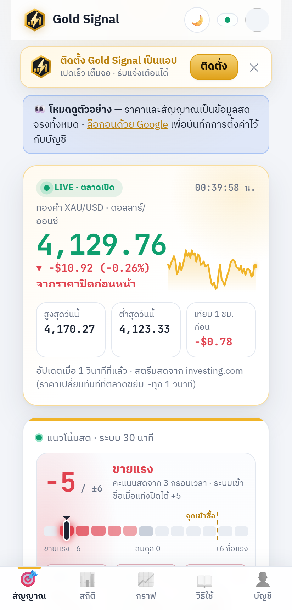
✨ แท็บบัญชี — ติดตั้ง + เปิด/ปิดแจ้งเตือน
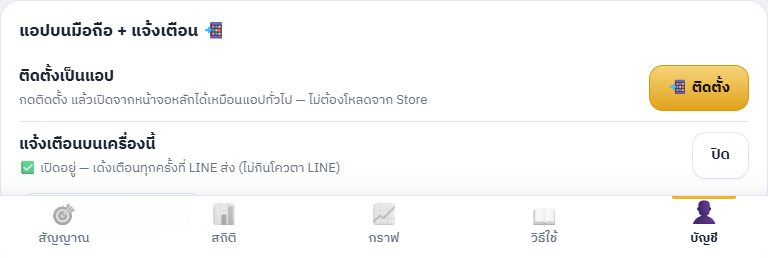
🕰️ แบบเก่า
- ใช้ได้แค่ในเบราว์เซอร์ ต้องพิมพ์ลิงก์หรือเปิดจากบุ๊กมาร์ก
- แจ้งเตือนมีแค่ LINE — โควตาฟรี 300 ข้อความ/เดือน/คน
✨ แบบใหม่
- ติดตั้งลงหน้าจอหลักได้ (Android/คอม: ปุ่มติดตั้ง · iPhone: แชร์ → เพิ่มไปยังหน้าจอโฮม) เปิดเต็มจอเหมือนแอป ไอคอนโลโก้สายฟ้า · ไม่มีเน็ตขึ้นหน้าแจ้งให้ลองใหม่
- แจ้งเตือนเด้งบนเครื่อง ทุกครั้งที่ระบบส่ง LINE (✅ จังหวะเข้า, เข้าไม้, TP/SL, ข่าวแรง, ภาพรวมเช้า) — ไม่กินโควตา LINE ฟรี · ผูกกับบัญชี Google สูงสุด 5 เครื่อง · กดปิดได้ตลอด
- iPhone ต้องติดตั้งเป็นแอปก่อน (iOS 16.4 ขึ้นไป) ถึงจะรับแจ้งเตือนได้
🕐 เวลาตลาดเลื่อนเองตามฤดู (เวลานิวยอร์ก)
6 ต.ค. 2569 · มีผลครั้งแรกวันจันทร์ 2 พ.ย. 2569
🕰️ แบบเก่า
- เวลาตลาดตายตัว 07:00–03:00 น. ทั้งปี
- ตั้งแต่ 1 พ.ย. ตลาดทองเปิด–ปิดช้าลง 1 ชม. → ชั่วโมงสุดท้าย (03:00–04:00) จะขึ้นว่า "ตลาดปิด" · ไม้ถูกปิด 02:45 ทั้งที่ตลาดยังเปิด · ข้อความเช้า 07:05 ส่งก่อนตลาดเปิด (08:00)
- ทดสอบย้อนหลังใช้เวลาผิดช่วงหน้าหนาว (~4.5 เดือน/ปี)
✨ แบบใหม่
- กลาง มี.ค.–ต้น พ.ย.: 07:00–03:00 น. · ต้น พ.ย.–กลาง มี.ค.: 08:00–04:00 น. (ตามเวลาออมแสงของสหรัฐ คำนวณเองทุกปี)
- เลื่อนให้ทั้งหมด: เปิด/ปิดตลาดบนเว็บ · งดเปิดไม้ชั่วโมงสุดท้าย · ปิดไม้ 02:45 → 03:45 · สัญญาณรายวันหมดอายุ · เบรกฉุกเฉินถึงจันทร์หน้า · สรุปรายสัปดาห์
- ข้อความเช้า: ตั้งเวลาไว้ 2 รอบ (07:05 และ 08:05) ระบบปล่อยเฉพาะรอบที่ตลาดเปิดแล้วและวันนั้นยังไม่ได้ส่ง
- ทดสอบย้อนหลัง 1 ปี (ข้อมูลชุดเดียวกัน ก่อนหักสเปรด): 30 นาที +$313.72 → +$293.48 (หลังสเปรด ≈ +$143) · 15 นาที +$243.19 → +$332.52 · รายวัน (ข้อมูลประกอบ) +$72.11 → −$19.23 — ตัวเลขใหม่ตรงกับเวลาจริงกว่า
🕯️ การ์ด 3 กรอบเวลา: เส้นราคา → แท่งเทียน
6 ต.ค. 2569
🕰️ แบบเก่า — กราฟเส้นราคาปิด
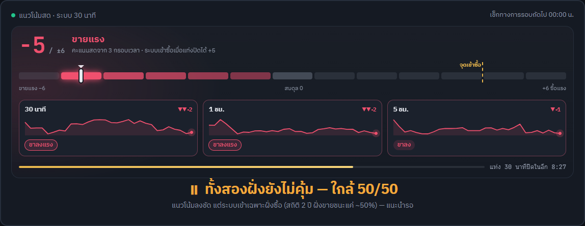
✨ แบบใหม่ — แท่งเทียนจริง
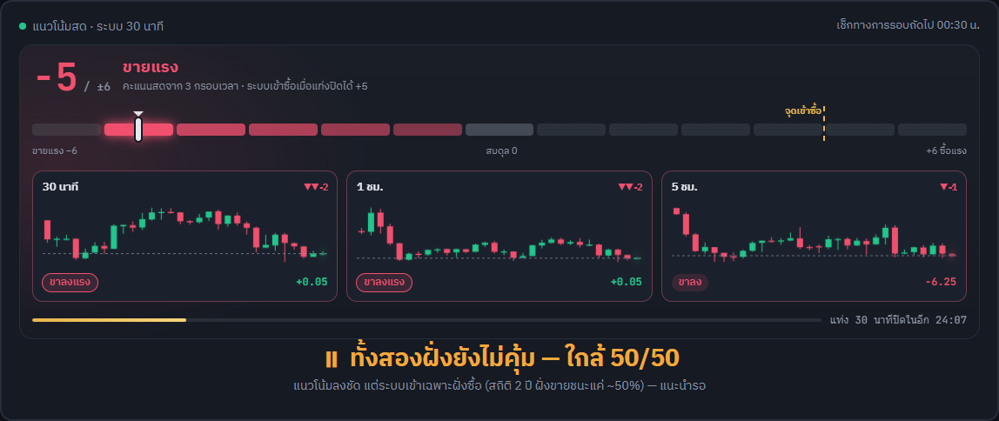
🕰️ แบบเก่า (มือถือ)
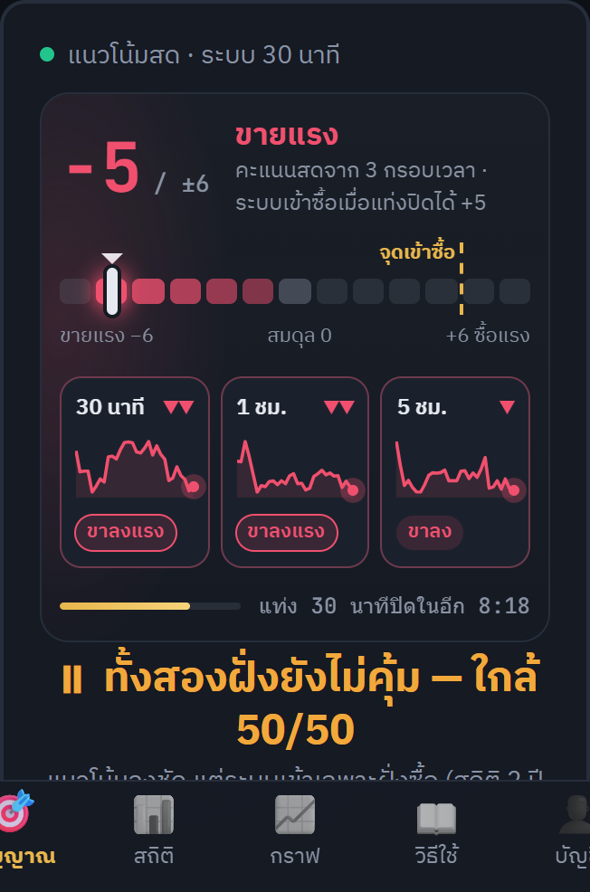
✨ แบบใหม่ (มือถือ)
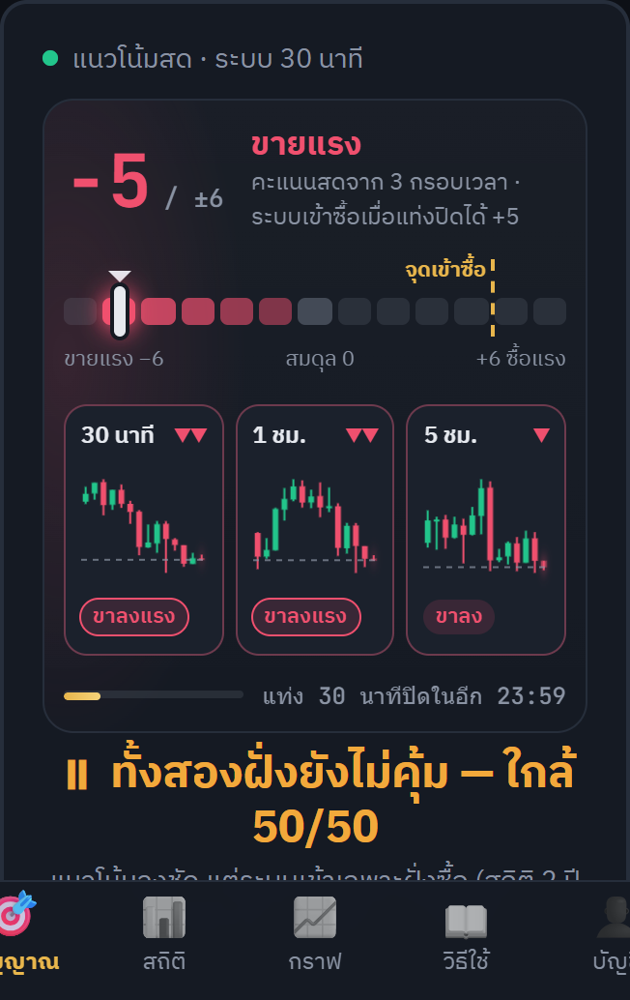
🕰️ แบบเก่า
- เส้นราคาปิด 30 จุด — ไม่เห็นราคาเปิด / สูง / ต่ำ ของแต่ละช่วง
✨ แบบใหม่
- แท่งเทียน 30 แท่ง (มือถือ 14 แท่ง) เขียว = ปิดสูงกว่าเปิด · แดง = ปิดต่ำกว่าเปิด · มีไส้บอกสูง–ต่ำ
- แท่งขวาสุดคือแท่งที่กำลังวิ่ง ขยับตามราคาสดและกะพริบเบา ๆ · เส้นประ = ราคาตอนนี้
- มุมขวาล่างบอกว่าแท่งนี้ขึ้น/ลงไปกี่ดอลลาร์จากราคาเปิดแท่ง (บนคอม)
- ขึ้นแท่งใหม่เมื่อไร แท่งเทียนจะเด้งขึ้นมาทีละแท่งจากซ้ายไปขวา
⚡ โลโก้ใหม่: ทองคำ + สายฟ้า · หน้าโหลดแบบฟ้าผ่า
6 ต.ค. 2569 · ไฟล์โลโก้: logo.svg

🕰️ แบบเก่า — เหรียญ "Au" หมุน
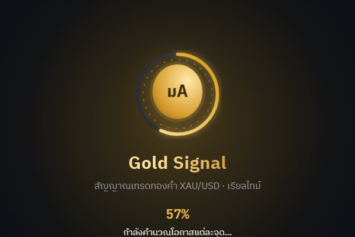
✨ แบบใหม่ — ตราหกเหลี่ยมทอง + แท่งทองขาขึ้น + สายฟ้า
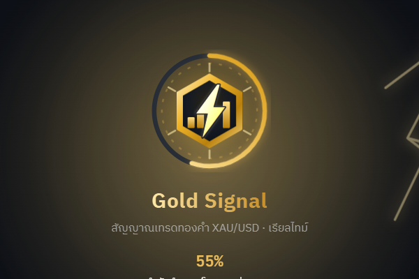
✨ ลำดับอนิเมชั่น (ซ้าย→ขวา บน→ล่าง)
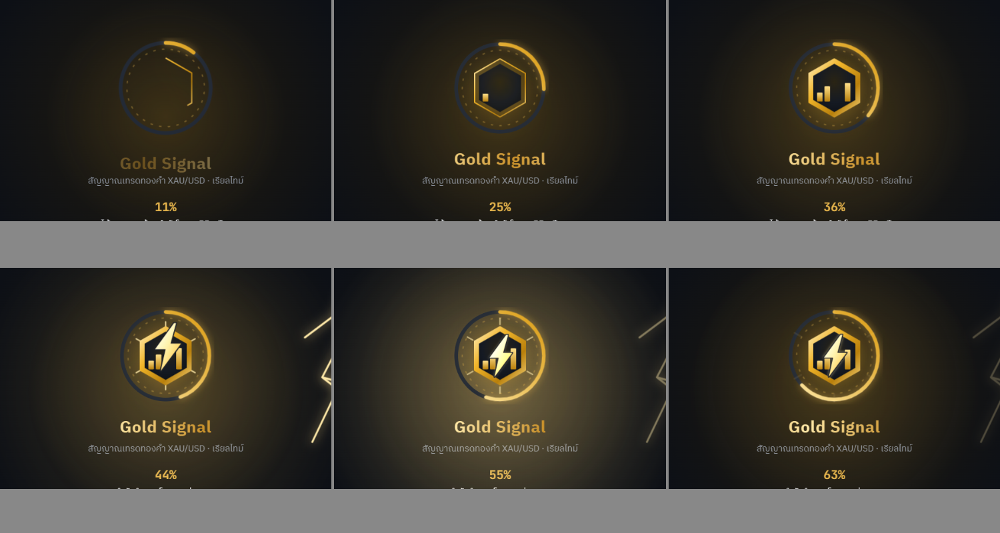
✨ มือถือ (ธีมสว่าง)
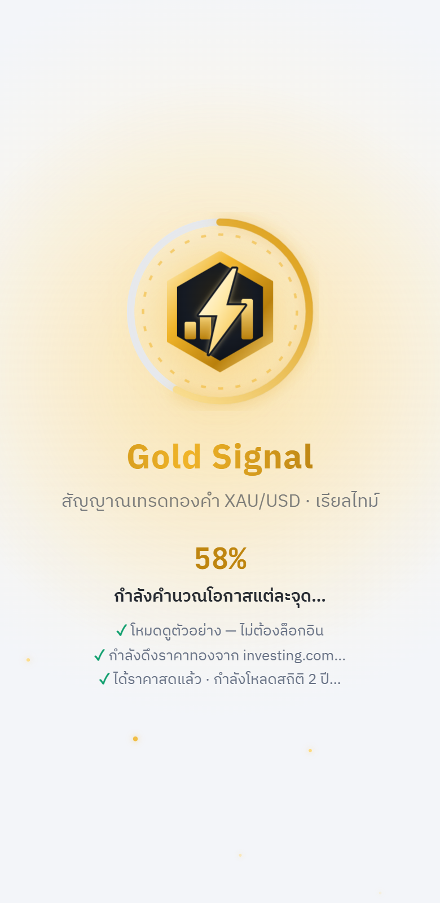
🕰️ แบบเก่า
- วงกลมสีทองเขียน "Au" หมุนไปมา — ดูธรรมดา ไม่สื่อว่าเป็นสัญญาณเทรด
- แถบบนเว็บใช้เหรียญ Au เหมือนกัน · ไม่มีไอคอนบนแท็บเบราว์เซอร์
✨ แบบใหม่
- โลโก้: ตราหกเหลี่ยมทอง (หน้าตัดแท่งทอง) · แท่งทอง 3 แท่งไล่ขึ้น = กราฟราคา/ความแรงสัญญาณ · สายฟ้าผ่ากลาง = เร็ว เรียลไทม์ (และ "ทันเดอร์")
- หน้าโหลด: ขอบทองวาดตัวเอง → แท่งทองเด้งขึ้นทีละแท่ง → สายฟ้าฟาดลงพร้อมแสงวาบทั้งจอ ประกายรอบตรา และฟ้าผ่าบนท้องฟ้า แล้วฟ้าผ่าซ้ำทุก 3.2 วินาที · โหลดเสร็จตราเด้งเรืองแสง
- ใช้โลโก้เดียวกันที่แถบบน หน้าล็อกอิน และไอคอนแท็บเบราว์เซอร์
🧭 แนวโน้มสด: จากหน้าปัดไมล์รถ → แถบความแรง + 3 กรอบเวลา · แก้ "ตลาดปิด" ทั้งที่ตลาดเปิด
5 ต.ค. 2569
🕰️ แบบเก่า — หน้าปัดเข็ม
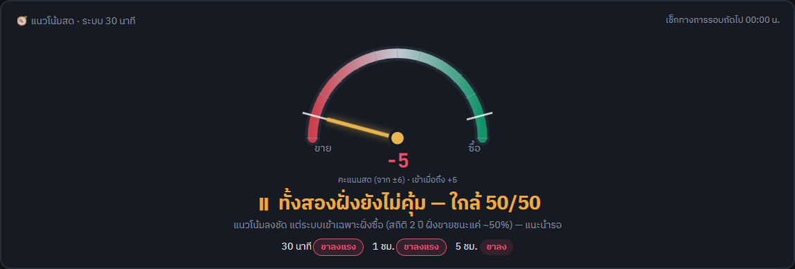
✨ แบบใหม่ — แถบ −6…+6 + กราฟเล็กของแต่ละกรอบเวลา

🕰️ แบบเก่า (มือถือ)
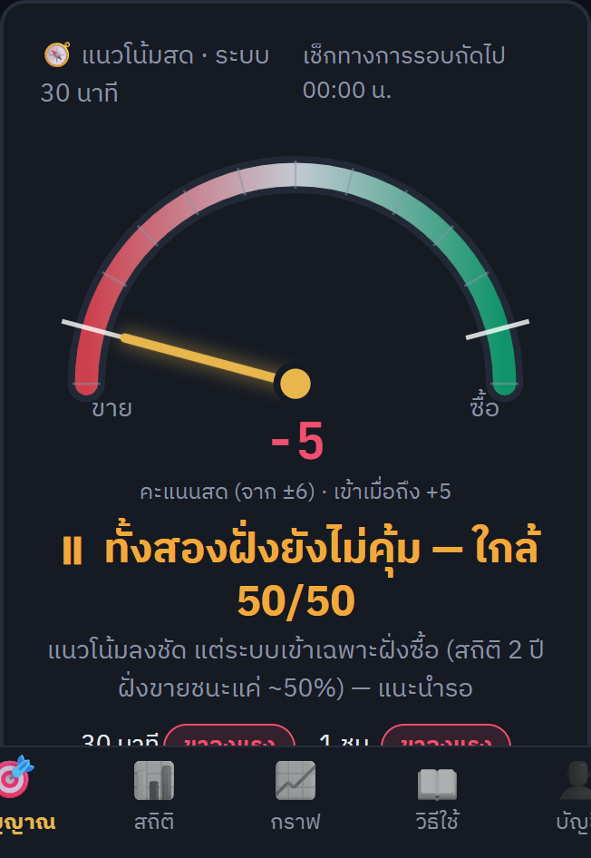
✨ แบบใหม่ (มือถือ)

🕰️ แบบเก่า
- เข็มชี้แบบมาตรวัดรถ ไม่บอกว่าคะแนนมาจากไหน
- ถ้าดึงแท่งกราฟไม่ทัน (เน็ตสะดุด / แท็บหลับ / investing.com จำกัดการเรียก) เกิน 2 ชม. → ขึ้น "🌙 ตลาดปิดอยู่" ทั้งที่ตลาดเปิด
✨ แบบใหม่
- แถบ 13 ช่อง (−6…+6) ไล่สีตามความแรง มีเส้น "จุดเข้าซื้อ +5" · ตัวเลขนับขึ้น/ลง · แสงวิ่งบนช่องที่ติด · พื้นหลังหายใจตามฝั่งที่เอียง
- 3 การ์ด 30 นาที / 1 ชม. / 5 ชม. — กราฟเล็กจากแท่งจริง 30 แท่ง (วาดใหม่ทุกแท่งใหม่) + คะแนนโหวต ▲▲ +2 เห็นชัดว่าคะแนนรวมมาจากไหน
- แถบนับถอยหลังถึงแท่ง 30 นาทีปิด (รอบที่ระบบตัดสินจริง)
- "ตลาดปิด" ดูจากเวลาเท่านั้น · ข้อมูลช้า → "⏳ กำลังดึงข้อมูลกราฟล่าสุด…" และดึงใหม่ทันที · ขึ้นแท่งใหม่จากราคาสตรีมเองเมื่อครบช่วง · กลับมาที่แท็บ → ดึงแท่งใหม่ทันที · ตลาดปิดจริงบอกวัน เช่น "เปิดอีกครั้ง วันจันทร์ 07:00 น."
🔔 แจ้งเตือน TP / SL / ✅ ตรงเวลาทุก 5 นาที
5 ต.ค. 2569
🕰️ แบบเก่า
- ตั้งเวลา "ทุก 5 นาที" ไว้กับ GitHub แต่ GitHub เริ่มงานจริงห่างกัน 10–20 นาที
- ราคาถึง TP / SL แล้วบางครั้งได้ข้อความช้า 15 นาที
✨ แบบใหม่
- งานแต่ละรอบอยู่ต่อ ~28 นาที และเช็กเองตรงทุก 5 นาที
- มีรอบถัดไปรอคิวทุก 15 นาที → ต่อกันไม่มีช่องว่าง · ไม่ต้องสมัครบริการเพิ่ม (ฟรี)
👀 ดูตัวอย่างได้โดยไม่ต้องล็อกอิน
5 ต.ค. 2569 · ลิงก์: gold-signal-ten.vercel.app/?demo=1 (ใช้ในหน้า Portfolio)
🕰️ แบบเก่า — ต้องล็อกอินก่อนถึงจะเห็นอะไร
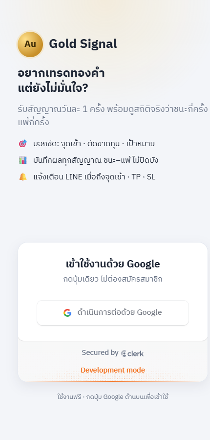
✨ แบบใหม่ — มีปุ่ม "ดูตัวอย่างก่อน"
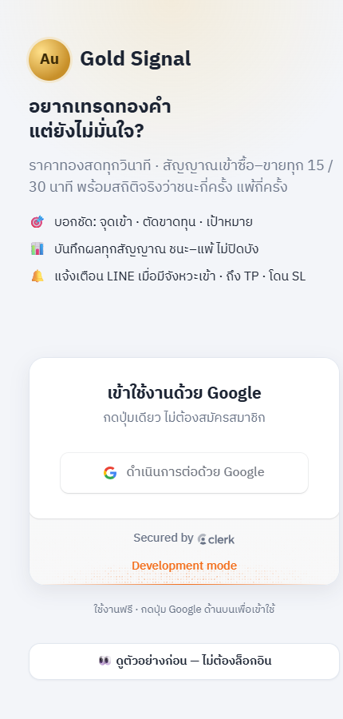
⚡ ราคาตรงกันทั้งเว็บ · ขยับทุกวินาที
5 ต.ค. 2569
🕰️ แบบเก่า — หัวเว็บ 4,141.07 แต่หน้ากราฟ 4,141.70 · "สำรอง · Binance PAXG"
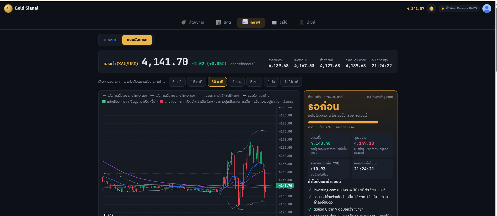
✨ แบบใหม่ — ทุกจุดเท่ากัน · "เรียลไทม์ · investing.com"
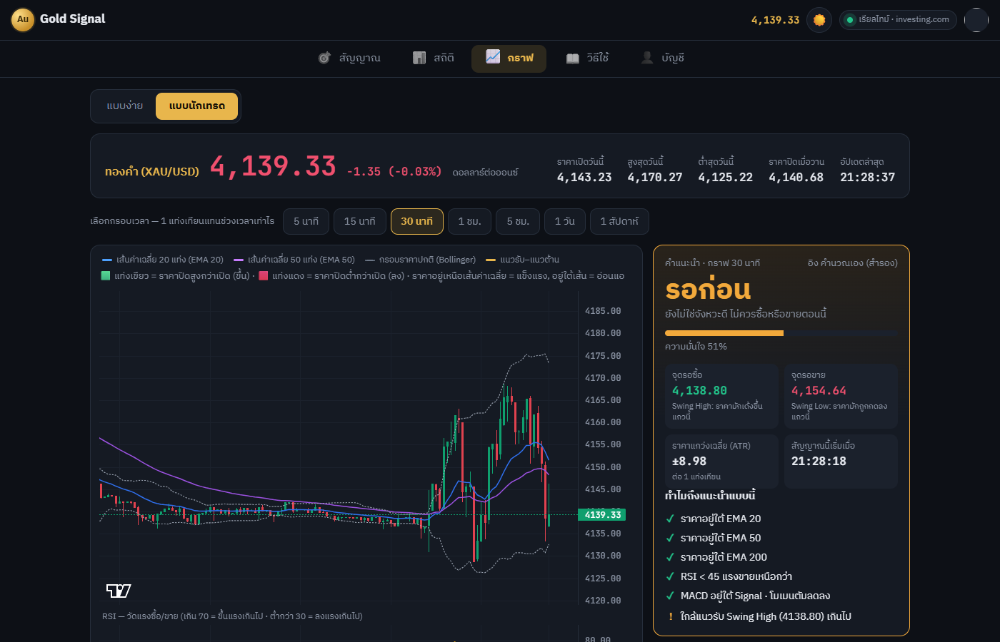